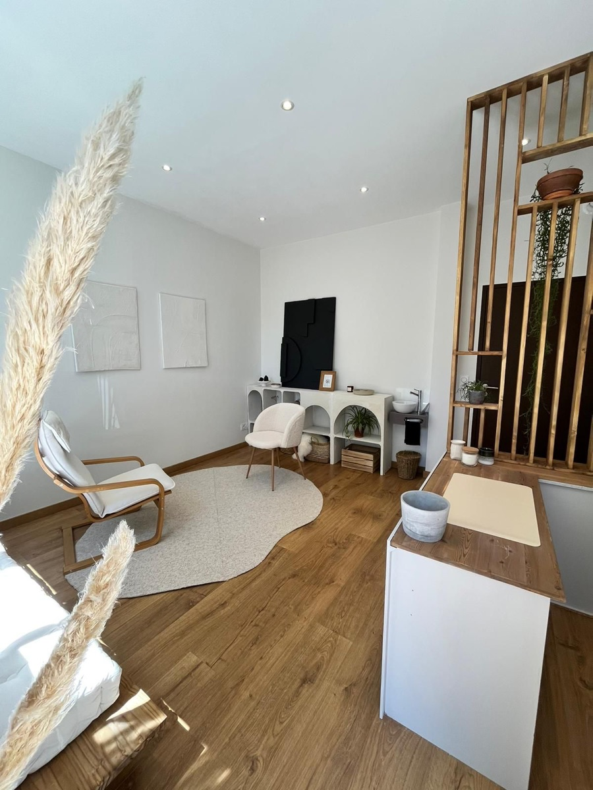
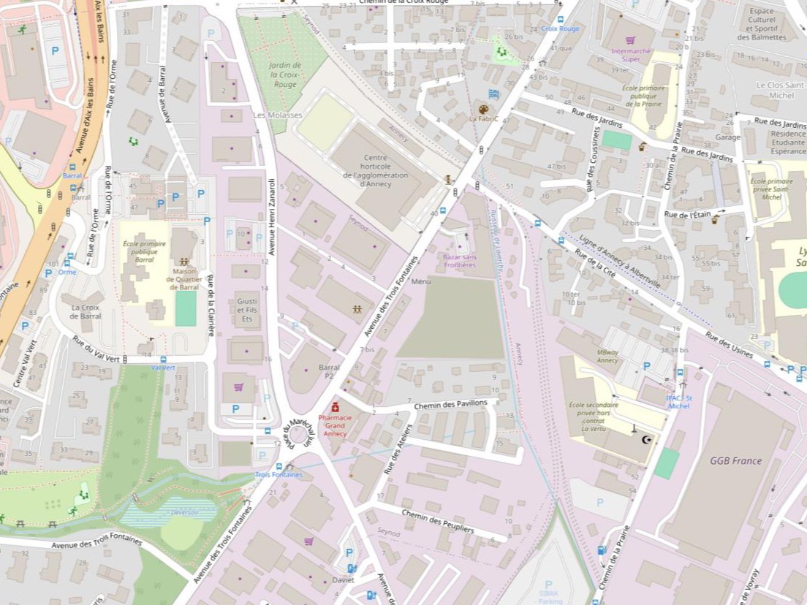

Adresse
Cabinet des 3 fontaines
5 ter avenue des 3 fontainesOù me trouver
74600 ANNECY
En bus : arrêt 3 Fontaines (lignes 4 ou 27) ou Loverchy cité (ligne 4).
En voiture : des places de stationnement se trouvent directement devant le bâtiment. Un parking supplémentaire est accessible en faisant le tour du bâtiment.

Accès
Situer le cabinet

Prendre rendez-vous
N'hésitez pas à me contacter pour un premier échange.